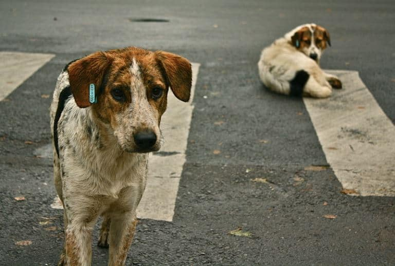
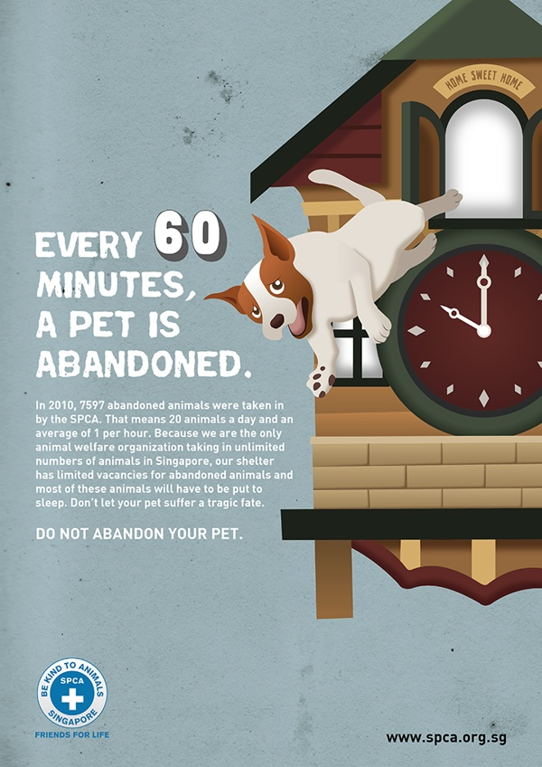
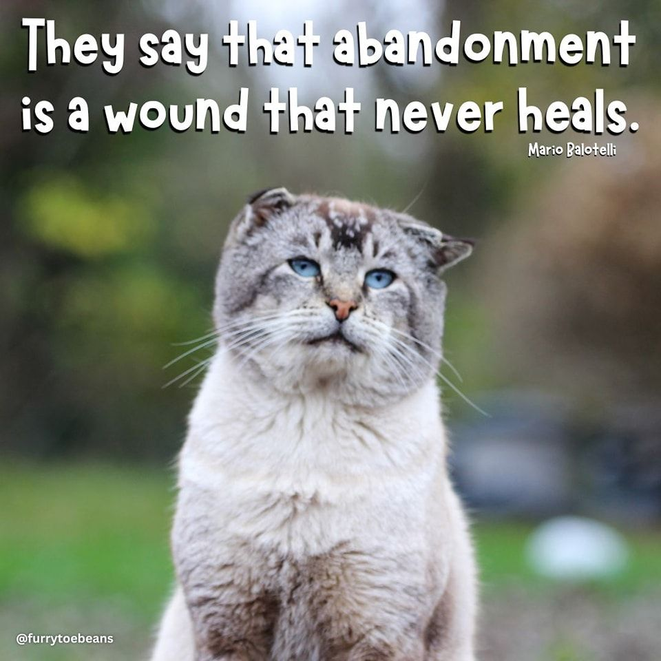

Paws4Life!
The problem I am addressing is the increasing number of stray dogs caused by people abandoning their pets and lack of awareness about animal welfare.
Treat dogs with love and responsibility—adopt, don’t abandon.
I care about this cause because stray dogs often suffer due to lack of food, shelter, and medical care.Many people abandon dogs without understanding the lifelong responsibility of owning a pet. I want to encourage empathy and responsibility towards animals in my community.
Major Misconceptions:
Impact on:
Things that I know:
- #1: There are millions of stray dogs in India alone.
- #2: Many abandoned pets cannot survive on the streets.
- #3: Animal shelters are overwhelmed and underfunded.
Useful Resources
PETA India
This resource is helpful because it provides data on stray animals and tips for protection.